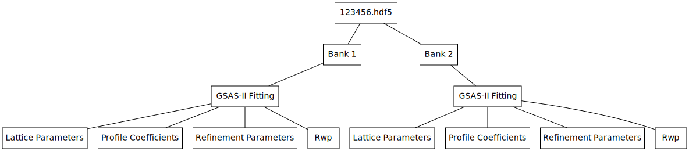
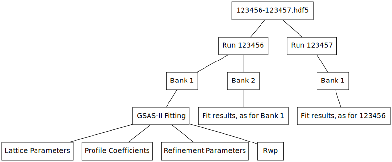

\(\renewcommand\AA{\unicode{x212B}}\)
EnggSaveGSASIIFitResultsToHDF5 v1¶
{kind=link}
EnggSaveGSASIIFitResultsToHDF5 dialog.¶
Summary¶
Save input parameters and fit results from GSASIIRefineFitPeaks to an HDF5 file, indexed by bank ID
Properties¶
Name |
Direction |
Type |
Default |
Description |
|---|---|---|---|---|
LatticeParamWorkspaces |
Input |
str list |
Table workspace containing lattice parameters |
|
RunNumbers |
Input |
long list |
The run number of each fitted run |
|
BankIDs |
Input |
long list |
Bank IDs of the workspaces a fit was run on (1 for each workspace, in order. 1 for North, 2 for South) |
|
RefinementMethod |
Input |
string |
Pawley refinement |
Which refinement method was used. Allowed values: [‘Pawley refinement’, ‘Rietveld refinement’] |
XMin |
Input |
number |
0 |
Minimum TOF value used for refinement |
XMax |
Input |
number |
0 |
Maximum TOF value used for refinement |
PawleyDMin |
Input |
number |
0 |
Minimum d spacing used for Pawley refinement |
PawleyNegativeWeight |
Input |
number |
0 |
Negative weight penalty used in Pawley refinement |
RefineSigma |
Input |
boolean |
False |
Whether to sigma profile coefficient was refined |
RefineGamma |
Input |
boolean |
False |
Whether gamma profile coefficient was refined |
Sigma |
Input |
dbl list |
GSAS-II profile coefficient sigma, one for each run (or none if sigma wasn’t refined) |
|
Gamma |
Input |
dbl list |
GSAS-II profile coefficient gamma, one for each run (or none if gamma wasn’t refined) |
|
Rwp |
Input |
dbl list |
Weighted profile R-factor, ‘goodness-of-fit’ measure. One for each run |
|
Filename |
Input |
string |
Mandatory |
HDF5 file to save to. Allowed extensions: [‘.hdf5’, ‘.h5’, ‘.hdf’] |
Description¶
Exports the results of a GSASIIRefineFitPeaks refinement, as well as the refinement parameters used, to an HDF5 file indexed by bank ID. If multiple sets of fit results are provided, then the file is divided into sub-groups for each run number, with the Run Number groups indexed further by bank ID.The results go in a sub-group of the Bank group called GSAS-II Fitting. The subgroups of this are the following:
Refinement Parameters¶
Settings passed to GSASIIRefineFitPeaks to generate this refinement.
RefinementMethod - either Pawley or Rietveld refinement
RefineSigma - whether sigma (Gaussian broadening term) was refined
RefineGamma - whether gamma (Lorentzian broadening term) was refined
XMin - the minimum TOF value used for refinement. Note this may not be the same as the XMin that you passed to GSASIIRefineFitPeaks, as XMin in GSASIIRefineFitPeaks will be overridden by PawleyDMin if the latter corresponds to a greater TOF value
XMax - the maximum TOF value used for refinement
Additionally, if RefinementMethod is Pawley refinement, the
two Pawley parameters will be saved:
PawleyDMin - the minimum D spacing to use for refinement
PawleyNegativeWeight - a weight penalty used in Pawley refinement
Lattice Parameters¶
The lattice parameters of the refined structure: alpha, beta, gamma, a, b, c and volume.
Profile Coefficients¶
Only saved if either RefineSigma or RefineGamma were turned on.
Gamma - Lorentzian broadening term of the GSAS-II peak profile. Only saved if it was refined
Sigma - Gaussian broadening term of the GSAS-II peak profile. Only saved if it was refined
Rwp (weighted-profile R-factor)¶
A measure of ‘goodness of fit’, as a percentage
File Structure¶
Obtaining fit results for banks 1 and 2 of run 123456 and then saving them with algorithm would yield the following file structure:
Obtaining fit results for banks 1 and 2 of run 123456 and bank 1 of 123457 and then saving them with the algorithm would yield the following file structure:
Usage¶
Warning
Due to a reliance on GSAS-II, the first example is not run on the build servers, so may not be correct. Please inform Mantid developers if you spot something awry
Example - Export refinement results to a new HDF5 file following GSAS-II refinement:
import os
path_to_gsas = r"C:\g2conda\GSASII"
gsas_proj_file = r"C:\mantid-data\280625.gpx"
data_dir = r"C:\mantid-data"
input_file = lambda file: os.path.join(data_dir, file)
phase_file = input_file("Fe-alpha.cif")
iparams_file = input_file("template_ENGINX_241391_236516_North_bank.prm")
input_ws = Load(Filename=input_file("ENGINX_280625_focused_bank_1.nxs"))
fitted_peaks, lattice_params, rwp, sigma, gamma = \
GSASIIRefineFitPeaks(InputWorkspace=input_ws,
PhaseInfoFiles=phase_file,
InstrumentFile=iparams_file,
RefinementMethod="Rietveld refinement",
SaveGSASIIProjectFile=gsas_proj_file,
PathToGSASII=path_to_gsas,
RefineSigma=True,
RefineGamma=False)
EnggSaveGSASIIFitResultsToHDF5(LatticeParamWorkspaces=[lattice_params],
Filename=r"D:\doctest.hdf5",
BankIDs=[input_ws.run()["bankid"].value],
RefinementMethod="Rietveld refinement",
XMin=min(fitted_peaks.readX(0)),
XMax=max(fitted_peaks.readX(0)),
RefineSigma=True,
RefineGamma=False,
Sigma=sigma,
Rwp=rwp)
Example - Mock up fit results and then read them back in:
Below is an example of how to read the results back in using the
Python h5py library.
import h5py
import os
# lattice_params table workspace is an output property of GSASIIRefineFitPeaks
lattice_params = CreateEmptyTableWorkspace()
lattice_param_headers = ["a", "b", "c", "alpha", "beta", "gamma", "volume"]
[lattice_params.addColumn("double", header) for header in lattice_param_headers]
lattice_params.addRow([2.8, 2.8, 2.8, 90, 90, 90, 25])
# Input properties of GSASIIRefineFitPeaks
refinement_method = "Pawley refinement"
x_min = 10000
x_max = 40000
refine_sigma = True
refine_gamma = False
# Output properties of GSASIIRefineFitPeaks
sigma = 81
rwp = 75
# Either read from the focused workspace sample logs or work it out from the title
bank_id = 1
filename = os.path.join(config["defaultsave.directory"],
"EnggSaveGSASIIFitResultsToHDF5DocTest.hdf5")
EnggSaveGSASIIFitResultsToHDF5(LatticeParamWorkspaces=[lattice_params],
Filename=filename,
BankIDs=[bank_id],
RefinementMethod=refinement_method,
XMin=x_min,
XMax=x_max,
RefineSigma=refine_sigma,
RefineGamma=refine_gamma,
Sigma=sigma,
Rwp=rwp)
with h5py.File(filename, "r") as f:
fit_results_group = f["Bank 1"]["GSAS-II Fitting"]
print("Lattice parameter a: {}".format(fit_results_group["Lattice Parameters"]["a"].value))
print("XMin: {}".format(fit_results_group["Refinement Parameters"]["XMin"].value))
print("RefineSigma: {}".format(bool(fit_results_group["Refinement Parameters"]["RefineSigma"])))
print("Sigma: {}".format(fit_results_group["Profile Coefficients"]["Sigma"].value))
Output:
Lattice parameter a: 2.8
XMin: 10000.0
RefineSigma: True
Sigma: 81.0
Categories: AlgorithmIndex | DataHandling